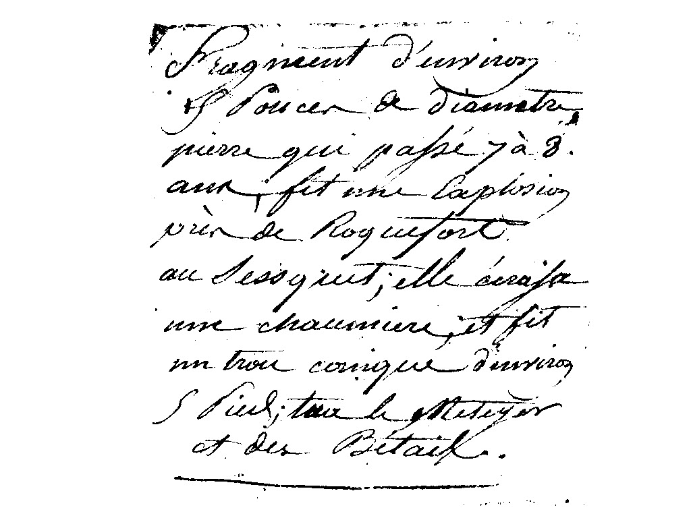
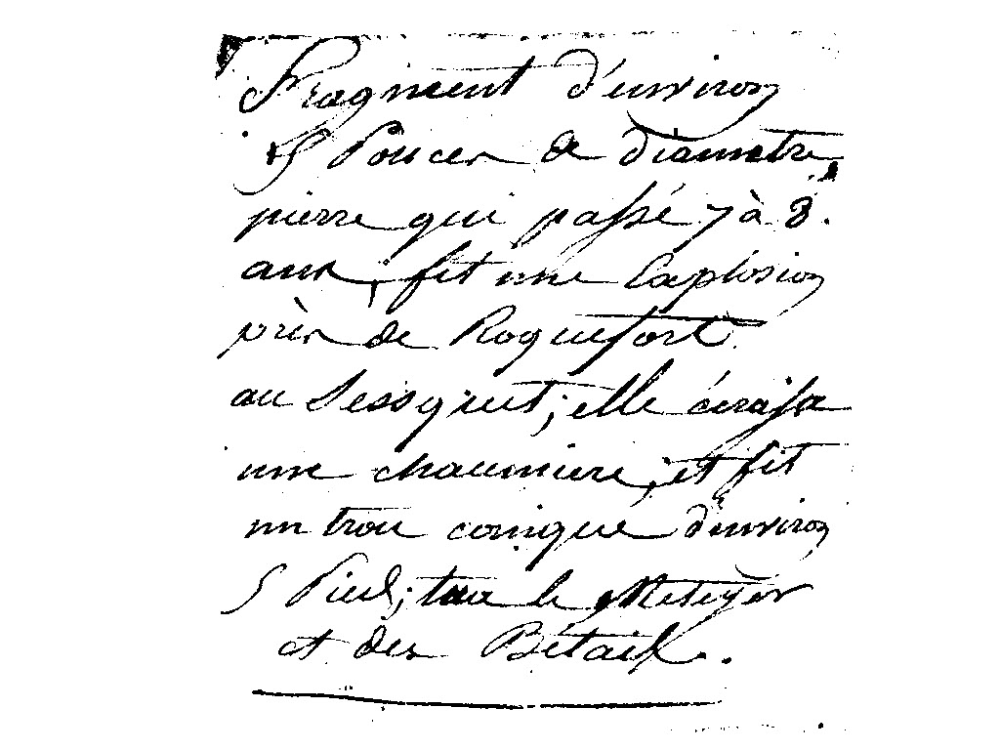
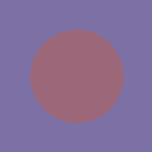
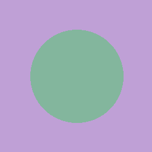
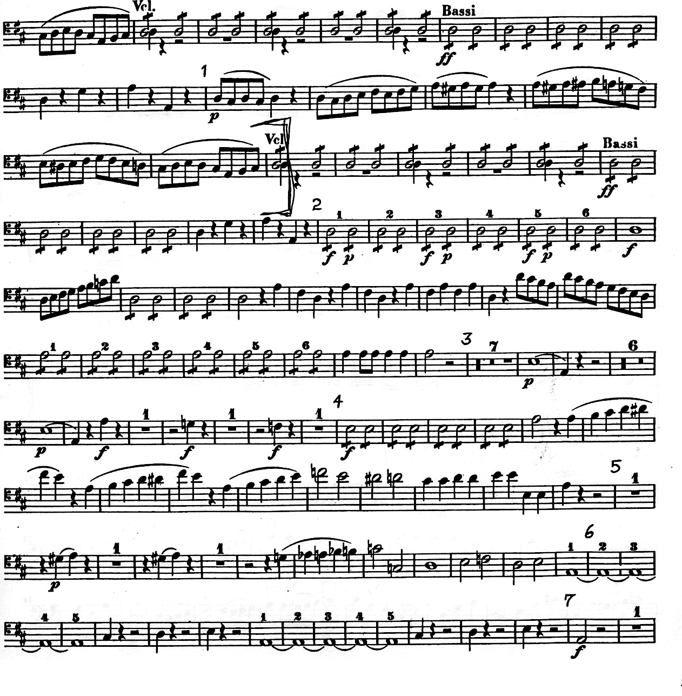
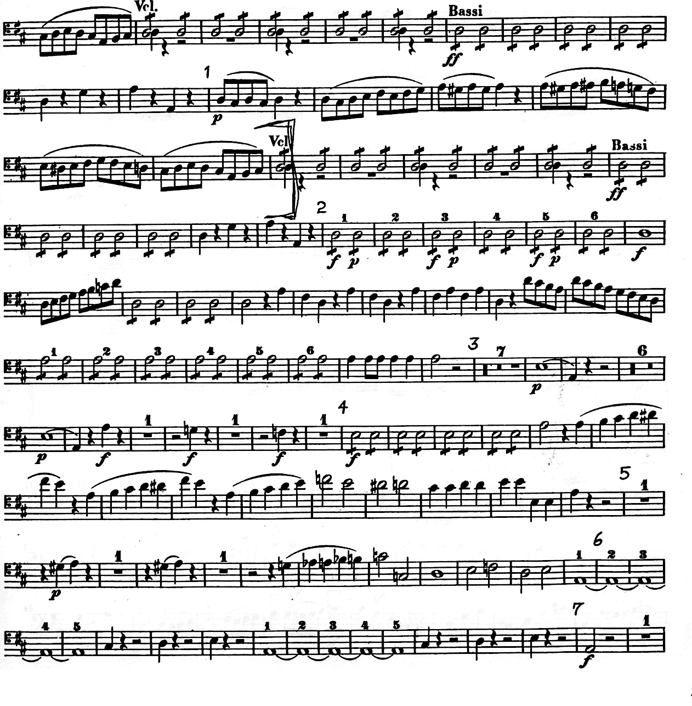

The threshold value for this image is 90.


The threshold value for this image is 1.
 

The threshold value for this image is 136. There is no single best threshold value. Many threshold values will result in an image where the text is black and the background is white.
Circle#9c6879Background#7d70a5Gray#777777 |
 | |
Circle#333106Background#1b3343Gray#303030 |
||
Circle#83b69dBackground#bfa0d6Gray#ababab |
 |
 

Besides the darker, more defined notes in the right image, the two images appear to be very similar. A flaw that I noticed in the enhanced image is that the smudges in the background of the left image also became more prominent.